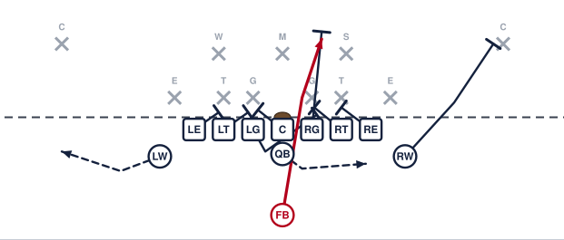

Trap Right

The answer when their inside linemen start firing upfield to beat our down blocks. We leave one of them completely unblocked, let him run himself out of the play, and the backside guard pulls across and knocks him out of the hole. The fullback runs inside of that block.
Assignments
- LE
- Block back and cut off pursuit. Nobody chases this from behind.
- LT
- Block back. Take the first defender on or inside you.
- LG
- PULL RIGHT. Stay flat and tight to the line. Trap the first defender past the center — kick him out with your playside shoulder.
- C
- Block back on the first defender to the backside. If nobody shows, climb to the backside linebacker.
- RG
- Do not touch the man over you — he is the one we are trapping. Step around him and go get the linebacker.
- RT
- Block down on the first defender inside you.
- RE
- Block down on the first defender inside you.
- LW
- Sprint flat behind the line and sell the sweep to the backside.
- RW
- Release outside and block the deepest defender on your side. Run right at his outside number.
- QB
- Open to the playside and hand the ball to the fullback at two yards. Keep the fake going wide — do not stand and watch.
- FB
- Aim just outside the center. Take the handoff, stay tight, and run inside the trap block. Get downhill — do not dance.
Coaching points
- The trapped defender must be left completely alone. If our guard even brushes him he will not run upfield, and the trap block misses.
- The pulling guard stays flat and low. If he bellies back he arrives late and the fullback runs into his back.
- Call this when their inside linemen are getting up the field fast. If they sit and read, run power instead.
- The fullback goes inside the trap block, never outside it. Walk him through it at half speed until it is automatic.